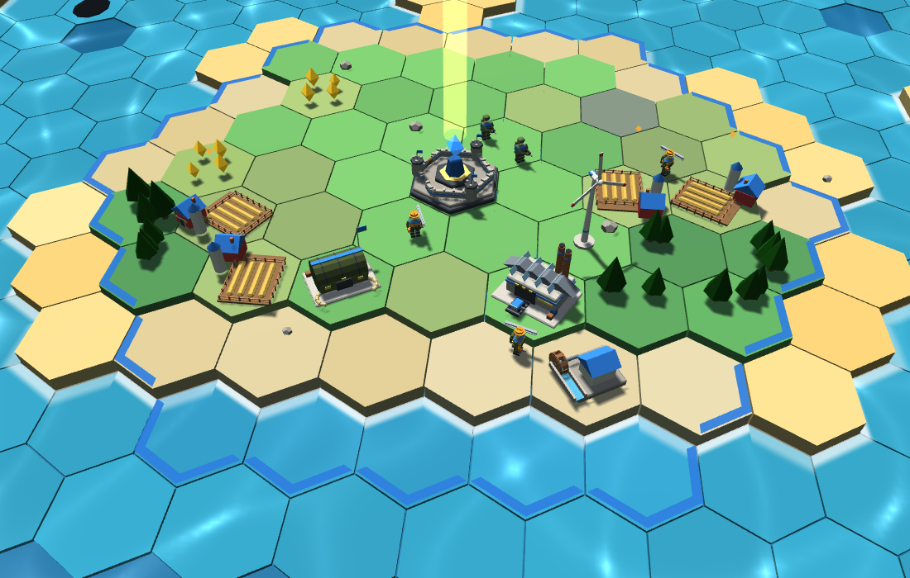
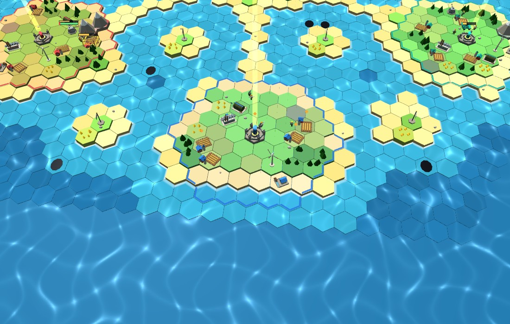
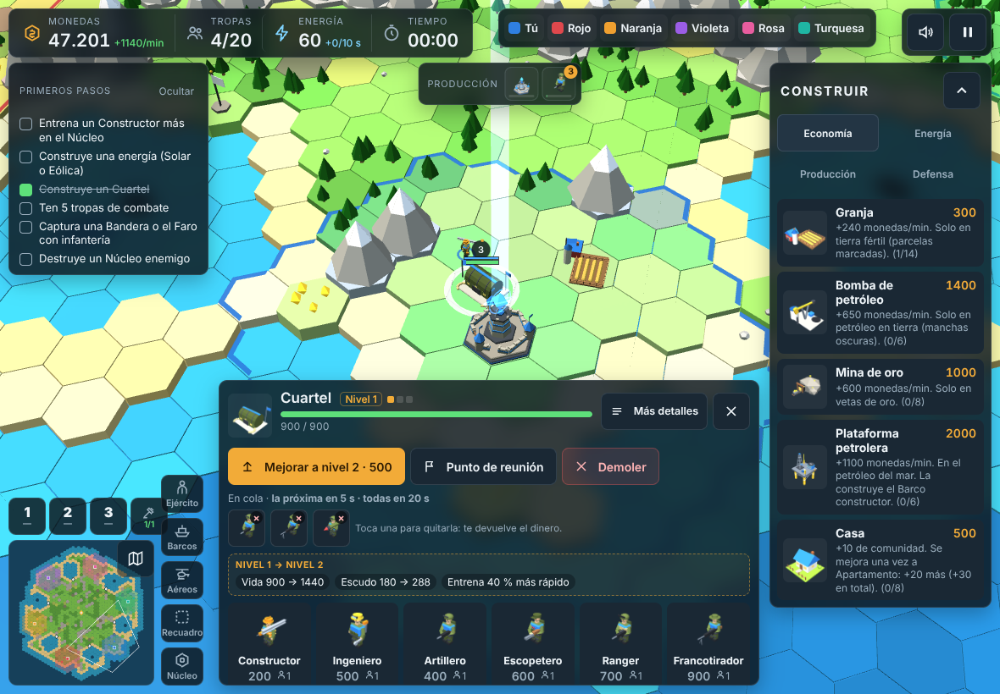

PRD y plan de inicio · versión 1.6
Instrucción vigente: el juego empezará cuando el usuario lo indique. Aprobar modelos o UI no inicia por sí solo el desarrollo.
Ruta elegida: Roblox Studio + Luau, con las cinco etapas y herramientas indicadas por el usuario. Studio se utiliza en ordenador; el acceso previsto en iPad es mediante la aplicación Roblox.
Objetivo: un juego de estrategia en tiempo real con formas de bloques tipo Roblox, terreno hexagonal 3D y controles cómodos en iPad horizontal. El jugador construye su base, produce unidades, conquista islas, combate y vuelve al menú al terminar.
El diseño original es documento_juego_v2.pdf (2 de noviembre de 2026, 30 páginas). Se contrasta con Faro_de_Ambar_Informe_Completo.pdf (6 de noviembre) y las fotografías del usuario. El informe describe un antecedente en Godot con 13 edificios, 18 unidades, tres mapas y seis modos.
Se combinan el diseño previo y la base Luau enviada: 27 unidades y 15 edificios provisionales. Hay 31 modelos estáticos 0.2 para revisar y 11 nuevos pendientes de diseñar. Las maquetas de UI y los modelos requieren revisión; integrar la base no inicia el desarrollo.
El proyecto original completo todavía no está disponible; ahora se han recibido ocho fragmentos Luau. Las 94 pruebas y el arranque Web citados pertenecen al informe histórico; no demuestran que esta propuesta funcione ya en Roblox. El enlace anterior también quedó pendiente.
Una partida deberá iniciarse y terminarse sin bloqueos. Los botones responderán correctamente, los gestos no duplicarán órdenes y los costes se explicarán. Se comprobarán el acceso y el rendimiento en un iPad identificado antes de afirmar que cumplen los objetivos.
Plan establecido por el usuario. Se ejecutará cuando indique empezar. Ahora se revisan modelos, UI y documentos; ninguna etapa de programación o publicación ha comenzado por registrar esta tabla.
| Etapa | Herramientas | Para qué sirven |
|---|---|---|
| 1. Empezar | Roblox Studio + Luau + Rojo + Git | Crear la base del juego, programar las mecánicas, organizar el código y guardar versiones. |
| 2. Intermedio | Blender + Animation Editor + SurfaceAppearance | Crear personajes, vehículos, edificios, animaciones y materiales realistas. |
| 3. Completar el juego | Roblox Studio + Luau + DataStoreService | Terminar menús, inventario, misiones, controles y guardado del progreso. |
| 4. Pulir el juego | MicroProfiler + Developer Console + simuladores de Studio | Corregir errores, mejorar rendimiento y cargas, probar multijugador y ajustar la experiencia en móvil. |
| 5. Publicar y actualizar | Roblox Studio + Creator Hub + Analytics | Publicar el juego, revisar su funcionamiento y preparar mejoras según los resultados. |
El primer incremento será una partida completa contra bots en un mapa y un modo. La estructura cliente-servidor se preparará desde la etapa 1; las pruebas amplias con varios jugadores se realizarán en la etapa 4.
Los 31 modelos 0.2 son propuestas estáticas ya disponibles para revisión. En la etapa 2 se ajustarán los aprobados, se prepararán rigs compatibles y animaciones, y se importarán a Roblox. Tener forma tipo R6 no significa que el rig esté terminado.
Orden vigente: primero revisión visual; después, cuando el usuario indique comenzar, estas cinco etapas. La aprobación de modelos o pantallas no inicia por sí sola la programación.
Las fotos son referencias de composición y legibilidad, no capturas de una nueva versión de Faro de Ámbar.
Se utilizarán nombres, iconos y recursos propios. Los materiales podrán incorporar metal, pintura y desgaste más realistas mediante PBR, conservando las formas de bloques. La cámara mostrará la base y su entorno; vegetación y efectos se ajustarán con mediciones de rendimiento.


Las dos capturas son del prototipo web de Faro de Ámbar. Sirven de referencia de composición, color y legibilidad para la versión de Roblox.
Distribución propuesta: recursos y participantes arriba; minimapa plegable a la izquierda; construcción plegable a la derecha; selección y producción abajo. El centro queda disponible para observar y dar órdenes.
Los botones principales tendrán un área táctil objetivo equivalente a 44 × 44 píxeles de interfaz, ajustada con escalado de UI y comprobada físicamente en la aplicación Roblox. En 4:3 y 16:9 se evitarán solapamientos. Los motivos de bloqueo aparecerán en español junto a la acción.

Estos requisitos definen el comportamiento futuro esperado. No autorizan a implementarlo ahora. Las reglas y recursos originales se contrastarán con ellos al planificar su adaptación a Roblox.
Revisar los 31 modelos estáticos 0.2 y sus maquetas de UI; especificar 11 modelos nuevos del catálogo combinado. Entregar por separado el PDF de UI y el PDF del juego con el PRD. Registrar qué aprueba el usuario y qué debe cambiar.
El desarrollo espera la indicación del usuario para comenzar. La elección de Roblox y esta hoja de ruta no sustituyen esa orden. Se conservarán las decisiones visuales para integrar solo recursos aprobados.
Preparar Studio, Luau, Rojo y Git. Construir un mapa y un modo contra bots: inicio, construcción, economía, producción, transporte, combate, resultado y regreso. Desde esta base el servidor valida las órdenes y decide sus efectos; el cliente presenta la UI y recibe la entrada.
Integrar y animar las unidades y edificios aprobados. Completar menús, tutorial, inventario, misiones y progreso por cuenta. Extender después el trabajo a los tres mapas y seis modos documentados, conservando pruebas de las reglas principales.
Probar varios clientes, entradas y salidas de jugadores, sincronización y rendimiento. Ajustar cargas, memoria, gráficos y controles en móvil. Preparar después la publicación en Roblox, revisar su funcionamiento y organizar actualizaciones con Analytics.
Alcance aún por concretar: matchmaking, límites de jugadores por modo, clasificación global, comercio y compras. Probar multijugador está incluido en la ruta; esas funciones adicionales necesitan reglas específicas antes de implementarse.
Plataforma seleccionada: Roblox Studio con Luau. Blender es la herramienta principal de creación de recursos; Maya queda como alternativa. La sección 14 incorpora las herramientas adicionales indicadas por el usuario.
Roblox Studio compone y ejecuta la experiencia. Luau define las mecánicas. Rojo sincroniza el proyecto y código del sistema de archivos con Studio; se definirá qué recursos gestiona. Git conserva versiones de los archivos incluidos en el repositorio. VS Code, Luau Language Server, Selene y StyLua apoyan la edición; Wally gestiona bibliotecas y Rokit fija versiones de herramientas compatibles. El progreso de los jugadores se guarda aparte.
Blender prepara geometría, UV, texturas y rig. Animation Editor crea y ajusta animaciones de rigs compatibles con Roblox. SurfaceAppearance aplica mapas PBR a MeshParts; los mapas deben crearse o prepararse antes. Los acabados realistas se adaptarán al estilo de bloques y al rendimiento móvil.
DataStoreService guarda perfiles por cuenta desde el servidor. Se prevén control de errores, reintentos limitados y actualizaciones que eviten duplicados o pérdidas. El servidor valida construcción, gastos, producción, daño y recompensas; la UI no decide esos resultados por sí sola.
MicroProfiler mide el coste de los sistemas. Developer Console permite investigar errores, memoria y red. Los simuladores y sesiones de varios clientes de Studio se complementan con pruebas en un iPad físico. Studio publica versiones; Creator Hub gestiona la experiencia y Analytics ayuda a evaluar el uso tras publicarla.
Godot y Unreal quedan como antecedentes documentales; esta ruta usa Roblox. Para reutilizar el antiguo proyecto se necesitarán sus fuentes y una evaluación de los recursos. GDScript, Blueprints o C++ no pasan automáticamente a Luau.
RNF-01: objetivo inicial de 30 fps sostenidos en un iPad identificado; 60 fps es aspiracional. Medir sesiones de 20 minutos, cargas, memoria y respuesta táctil. Repetir 120 unidades como prueba de estrés, sin afirmar rendimiento antes de medirlo.
Cada resultado incluirá versión del proyecto, entorno, pasos, resultado esperado y evidencia. Pendiente no equivale a aprobado. Estas pruebas son futuras y se ejecutarán tras la orden de inicio. La emulación táctil complementa la prueba física; no acredita el rendimiento de la aplicación Roblox en iPad.
Las reglas adicionales se comprueban con CA-12 a CA-15; CA-16 cubre multijugador y servidor (sección 9). Las 94 pruebas históricas servirán de referencia para adaptar comprobaciones a Roblox. Antes de entregar el acceso se verificará una entrada limpia desde la aplicación Roblox.
PDF de UI separado del PDF del juego con PRD 1.6, más fuentes de los 31 modelos estáticos. La revisión visual sigue pendiente del usuario. Esta actualización combina la base Luau con el diseño previo, conserva ambos balances y registra correcciones de movimiento, UI y guardado. Los fragmentos se han revisado por lectura; no se ejecutaron en Roblox.
Ejecutar una sesión con al menos dos clientes en Studio. Comprobar selección, órdenes, producción, movimiento, combate y resultados coherentes entre clientes. Probar entrada, desconexión y reconexión sin bloquear al resto. Las solicitudes inválidas o repetidas no deben crear recursos ni recompensas adicionales.
En calidad: errores, tiempos de carga, memoria y tiempos de cuadro. Tras publicar: inicio y final del tutorial, inicio y final de partidas, abandono y retorno de jugadores según las métricas disponibles. Las mediciones orientarán mejoras; aún no existen resultados de producción.
Para reutilizar el proyecto histórico se necesitará el ZIP original y revisar sus fuentes. La creación en Studio requiere ordenador; la comprobación móvil requiere un dispositivo físico. Al iniciar se registrarán versiones y configuraciones; Rokit fijará las herramientas CLI compatibles. Se conservarán fuentes y exportaciones de arte y audio. Cuentas y permisos se revisarán al iniciar cada trabajo.
Ahora corresponde revisar los documentos y diseños. El desarrollo comenzará cuando el usuario lo indique. No se fijan fechas, se configura un repositorio ni se publica una experiencia por actualizar el PRD.
15 edificios: 13 anteriores y 2 nuevos. Las cifras de ambas fuentes son provisionales; no se mezclan automáticamente. «—» significa no definido. E = energía. La omisión de energía en la base no la elimina del diseño.
| Edificio | Coste anterior | Oro base | Función combinada |
|---|---|---|---|
| Núcleo | 0 | 0 | Centro y defensa; su caída elimina al jugador. |
| Granja | 800 | 60 | Agricultura e ingresos. |
| Molino | 150 | — | Produce energía. |
| Casa | 5.000 | — | Amplía población. |
| Cuartel | 200 | 150 | Produce la infantería combinada. |
| Fábrica | 400 + 50 E | 400 | Vehículos terrestres. |
| Puerto | 3.000 | 350 | Produce y cura barcos; en costa. |
| Helipuerto / Hangar | 40.000 | 600 | Producción aérea; adaptar diseño y salidas. |
| Muro | 30 | — | Obstáculo defensivo. |
| Torreta | 250 | — | Defensa terrestre. |
| Antiaéreo | 300 | — | Defensa aérea. |
| Bomba de petróleo | 3.200 | — | Extracción terrestre. |
| Plataforma petrolera | 15.000 | 500 | Extracción en yacimientos marinos. |
| Corral de ganadería | — | 120 | Ganadería de vacas o cerdos; ingresos. |
| Mina de oro | — | 300 | Extracción sobre yacimientos de oro. |
El diseño previo propone Núcleo, una Granja, 2.000 monedas y 20 plazas iniciales. Núcleo y Granja generan 1.500 y 2.000 monedas/min; Molino, 5 E cada 10 s; Bomba y Plataforma, 2.800 y 10.000 monedas/min. La base usa GeneracionOro sin período: no se asume oro por segundo ni por minuto.
Se conservan seis Casas iniciales, dos más por rival eliminado y cinco plazas por nivel. Edificios hasta nivel 3; Casas hasta nivel 4, con mejoras de 2.500, 3.500 y 5.000. El «50 % del costo» de otras mejoras requiere definir su base. El balance final sigue pendiente; la combinación no aprueba precios.
27 unidades: 18 anteriores y 9 añadidas. Costes separados por fuente; «—» no significa cero. Plazas conserva la población anterior, no capacidad de transporte; las aéreas eran ejemplos. Los 18 modelos anteriores son propuestas estáticas; las 9 adiciones aún no tienen modelo.
| Unidad | Coste anterior | Oro base | Plazas | Productor |
|---|---|---|---|---|
| Constructor | 200 | 40 | — | Cuartel |
| Ingeniero | 600 | — | — | Cuartel |
| Artillero | 700 | — | — | Cuartel |
| Escopetero | 950 | — | — | Cuartel |
| Ranger | 1.000 | — | — | Cuartel |
| Francotirador | 1.200 | 80 | — | Cuartel |
| Rompedor | 1.250 | — | — | Cuartel |
| Cazador | 1.800 | — | — | Cuartel |
| Cohetero | 2.500 | — | — | Cuartel |
| Explorador | — | 30 | — | Cuartel |
| Soldado | — | 55 | — | Cuartel |
| Tanque | 300 + 30 E | — | — | Fábrica |
| Camión antiaéreo | 200 + 20 E | — | — | Fábrica |
| Blindado ligero | — | 180 | — | Fábrica |
| Tanque ligero | — | 300 | — | Fábrica |
| Tanque pesado | — | 550 | — | Fábrica |
| Lancha rápida | 1.800 | — | 1 | Puerto |
| Barco constructor | 2.600 | — | 1 | Puerto |
| Barcaza | 4.100 | 100 | 1 | Puerto |
| Destructor | 6.000 | — | 4 | Puerto |
| Submarino | 6.800 | 400 | 3 | Puerto |
| Cañonera | — | 250 | — | Puerto |
| Acorazado | — | 700 | — | Puerto |
| Helicóptero | 26.000 | 450 | 3 | Hangar* |
| Apache Guardián | 35.000 | — | 5 | Hangar* |
| Dron explorador | — | 120 | — | Hangar* |
| Avión de combate | — | 800 | — | Hangar* |
Builder → Constructor; Sniper → Francotirador; Submarine → Submarino. TransportBoat → Barcaza conserva el transporte de soldados y tanques. AttackHelicopter → Helicóptero es una equivalencia provisional; Apache Guardián permanece separado.
Se mantienen por separado Tanque, Tanque ligero y Tanque pesado, y también Lancha rápida/Cañonera y Destructor/Acorazado. Se revisará si algunos son variantes; no se descarta ninguna entrada por parecido de nombre. Soldado se añade sin retirar Artillero ni Ranger.
*Hangar amplía el Helipuerto existente; incorporar el avión de combate requiere revisar su modelo y las salidas. El JSON combinado adjunto conserva todos los valores de Vida, Ataque, Rango y Velocidad recibidos, con su fuente y sin inventar valores para las unidades anteriores.
Estas reglas completan RF-02 a RF-07. Las cantidades marcadas como ejemplo son referencias provisionales; cada prueba registrará la configuración efectivamente utilizada.
Emergencia (p. 13): al llegar al 25 % de vida del Núcleo, se activa una vez por partida; duración propuesta de 20 segundos. La vida de 2.000 y esos números aparecen como ejemplos. El informe posterior confirma como comportamiento descrito el umbral del 25 %.
Cúpula (p. 12): compra adicional por 25.000 monedas de partida, precio propuesto por EMF y recogido en el informe; una por jugador. Absorbe daño naval y aéreo cercano según el informe; permite pasar infantería y disparar desde dentro. Estados azul, amarillo y rojo. La recuperación de 60 segundos es un ejemplo, y su vida no queda cuantificada.
CA-12: activar emergencia dos veces en una partida y comprobar que solo opera la primera; reiniciarla en una partida nueva. Probar daño, rotura y recuperación de la Cúpula por separado. Verificar que la infantería entra y que el disparo propio funciona. La colisión física de barcos o aeronaves con la Cúpula requiere aclarar el «frena» del diseño antes de cambiarla.
Construir solo en territorio propio, con coste y duración visibles. Puerto en costa junto al agua; plataforma sobre petróleo. Capturar una isla sin Núcleo exige soldados cerca de su bandera y ausencia de enemigos durante un tiempo configurable (pp. 5–7 y 13). Bosque: lentitud y ocultación; montaña: visión ampliada, sin construir. Las ventajas entre tropas deben favorecer ejércitos variados.
CA-13: rechazar construcción fuera de territorio; probar ocupación, límites de Casas y población. Disputar una captura con enemigos y completarla al despejar la zona. Comprobar bosque, montaña y que las mejoras cobran según la regla registrada en la auditoría.
Constructor repara; Ingeniero construye más rápido y coloca una torreta pequeña (p. 9). Puerto cura barcos cercanos; Barco constructor instala plataformas; Submarino usa sigilo (p. 10). La Barcaza lleva soldados y tanques: lo cubre CA-06.
CA-14: dañar y reparar entidades válidas, producir en el Puerto seleccionado, instalar una plataforma válida e impedir otra sobre un punto ocupado. Probar ocultación y detección del Submarino con las reglas del proyecto; el diseño no define por completo quién lo detecta.
El tutorial enseña construir, producir y atacar; el diseño propone insignia Primer Faro, 150 cristales y Soldado Dorado (p. 18). El informe posterior describe esa recompensa como implementada y única. Se preserva como referencia por comprobar con CA-09.
Las pp. 21–25 proponen pase de 40 niveles, tres misiones diarias y tres semanales, una sustitución diaria y premios de siete días: 20, 20, 30, 30, 40, 40 cristales y Cofre del Faro. Son cifras de ejemplo; no se cambian automáticamente los valores recuperados del proyecto.
Cofre de Isla: 60/28/10/2 %; Cofre del Faro: 40/38/17/5 % para común/raro/épico/legendario. Probabilidades y garantía de un legendario cada 30 cofres son propuestas. Repetidos devuelven cristales; falta fijar cuánto y cómo se cuenta la garantía.
CA-15: mostrar probabilidades antes de abrir; sumar 100 %; acreditar premios una vez; comprobar devolución y garantía según configuración. Equipar una apariencia no debe cambiar vida, daño, velocidad ni coste. Monedas y energía se reinician por partida; el perfil conserva progreso. Verificar día de reinicio y racha antes de afirmar que funcionan.
Prioridad inmediata: revisar modelos y UI. El juego empezará cuando el usuario lo indique. Roblox ya es la plataforma elegida; al iniciar se concretará el alcance de cada etapa y se contrastarán las reglas con las fuentes originales.
Incorporadas a petición del usuario. Complementan las cinco etapas de la sección 2. Se prepararán cuando el usuario indique empezar; esta revisión actualiza únicamente la documentación.
| Herramienta adicional | Para qué sirve |
|---|---|
| Visual Studio Code | Escribir y organizar el código fuera de Studio. Rojo sincroniza los archivos del proyecto con Studio. |
| Luau Language Server | Añadir autocompletado y revisión de tipos al editor. Se configurará con las definiciones de Roblox y la estructura del proyecto. |
| Selene + StyLua | Selene detecta problemas comunes; StyLua aplica un formato uniforme al código. Complementan las pruebas del juego. |
| Wally | Instalar y administrar bibliotecas de código para Roblox y sus versiones. Se incorporarán las dependencias necesarias para el proyecto. |
| Rokit | Mantener las mismas versiones de las herramientas de línea de comandos compatibles, como Rojo y Wally. |
| Substance 3D Painter | Pintar materiales y texturas detalladas: metal, madera, tela, desgaste y suciedad; exportar mapas PBR para SurfaceAppearance. |
| Photoshop | Crear iconos, imágenes para menús, texturas y miniaturas. La interfaz interactiva se construye y programa en Roblox Studio. |
| REAPER o Audacity | Crear y editar sonidos, voces y música, y preparar archivos para importarlos a Roblox. Se elegirá uno según el trabajo. |
| Autodesk Maya | Modelar personajes, preparar rigs y realizar animaciones avanzadas. Es una alternativa a Blender, no un requisito adicional. |
Etapa 1 y mantenimiento: VS Code, Luau Language Server, Selene, StyLua, Wally y Rokit acompañan el trabajo con Luau, Rojo y Git. Rokit fija herramientas compatibles; las versiones de Studio y de las aplicaciones de arte se registran por separado.
Etapas 2 y 3: Substance 3D Painter, Photoshop y REAPER o Audacity preparan materiales, imágenes y audio. Maya puede sustituir a Blender en modelado y animación. Se comprobará la importación de los recursos en Roblox.
Los materiales detallados conservarán las siluetas de bloques tipo Roblox. Texturas y audio se ajustarán al rendimiento móvil. Primero se revisan los modelos y la UI; el desarrollo sigue pendiente de la indicación del usuario.
Decisión del usuario: combinar la base con nuestro juego. Se conservan hexágonos, Faro, territorio, economía con energía, población, producción por edificio seleccionado, Barcaza, defensas, modos y progreso cosmético. La base aporta datos y esquemas para adaptar, no una versión ya funcional.
El catálogo provisional reúne 42 entradas: 15 edificios y 27 unidades. Añade Corral, Mina de oro, Explorador, Soldado, Blindado ligero, Tanque ligero, Tanque pesado, Cañonera, Acorazado, Dron explorador y Avión de combate. Son 11 modelos nuevos por diseñar; los 31 anteriores siguen pendientes de revisión. También se adaptará el Helipuerto a Hangar.
Core → Núcleo; Farm → Granja; Barracks → Cuartel; VehicleFactory → Fábrica; Harbor → Puerto; OilRig → Plataforma petrolera; Hangar → Helipuerto/Hangar. Los identificadores ingleses se vinculan a nombres españoles, modelos e iconos propios. La UI usará el catálogo combinado y mostrará costes definitivos solo tras resolver el balance.
Catalogo_Combinado_Faro_de_Ambar_v1_6.json registra las 42 entradas, valores anteriores y valores nuevos por separado, estadísticas recibidas y estado de cada modelo. Es documentación estructurada; no es el ModuleScript ejecutable. Un valor nulo significa pendiente, nunca cero.
Se conservan las distribuciones documentadas Archipiélago Ámbar, Bahía Gris y Arrecife Doble. Se añaden tres perfiles de la base: Valle Verde para agricultura y tierra; Islas de Guerra para navegación y petróleo; Desierto Seco para agua escasa y oro. Su relación con las distribuciones se definirá al generar mapas; no se afirma que existan seis mapas terminados.
El tablero cuadrado aleatorio de 20 × 20 sirve de referencia técnica. El resultado conservará hexágonos conectados, costas, puertos útiles, yacimientos y rutas transitables. La generación independiente de celdas no asegura esas condiciones; se comprobarán conectividad y zonas iniciales.
Se unificará «oro» con las monedas de partida, conservando energía y población. GeneracionOro necesita un período. El combate recibido propone Rango × 12 studs y un ataque por ciclo cercano a un segundo; son convenciones por revisar. El movimiento implica una velocidad en studs por segundo al corregir el nombre del campo. El saldo inicial 200 del guardado recibido no reemplaza automáticamente las 2.000 monedas del diseño previo.
Las gemas/cristales pertenecen al perfil persistente. El oro de partida se reinicia. El historial de códigos se incorpora al perfil cuando exista un sistema de canje validado por servidor; los fragmentos solo muestran carga y guardado del historial, no la entrega segura de premios.
Revisión estática de ocho bloques; no ejecutados en Roblox Studio. Las correcciones siguientes forman parte del plan futuro. No se han instalado scripts ni iniciado el juego.
Validar cobro único y fallo de spawn; rechazar edificios/unidades ajenos y órdenes inválidas; probar rutas entre islas sin atajos; comprobar que la UI usa el productor seleccionado en iPad; recuperar el perfil tras reconexión sin reiniciar datos por un error de carga. Las pruebas CA-01 a CA-16 siguen vigentes y se ampliarán con estos casos.
Las secciones siguientes completan la revisión, la configuración y el archivo íntegro de los ocho códigos. Primero se revisan modelos, UI y documentación; la implementación espera la orden del usuario.
Los dos últimos bloques amplían la base con presentación de carga y combate automático. Se incorporan al plan; todavía no están integrados ni probados. Las referencias a Mini Empires se conservan en la transcripción recibida; la implementación y presentación utilizarán Faro de Ámbar.
El bloque crea una pantalla oscura con título y barra verde. La barra avanza con 100 esperas de 0,03 segundos: representa tiempo transcurrido, no disponibilidad real del mapa, perfil o modelos. Se sustituirá por estados reales de preparación, con información de error o reintento cuando corresponda.
La carga se ejecutará en un LocalScript de ReplicatedFirst. Se mostrará la pantalla propia antes de retirar la predeterminada y se esperará la disponibilidad de los recursos esenciales y la señal de partida lista. La barra solo mostrará porcentajes si se pueden medir; de otro modo indicará la fase actual.
El Tween solo desvanece el fondo; título y barras permanecen opacos. La transición incluirá todos los elementos. Texto, márgenes y reaparición se comprobarán en iPad con el nombre y arte del proyecto.
El bucle ataca al primer objeto cercano con Vida, sin distinguir propietario o equipo. Por tanto, puede dañar aliados. Se registrarán dueño, equipo, estado y objetivos permitidos para cada entidad; el servidor elegirá un enemigo válido y aplicará las reglas de alcance, visibilidad y tipo de ataque.
La propuesta interpreta Rango como un múltiplo de 12 studs y realiza como máximo un ataque por atacante y ciclo de aproximadamente un segundo. Estos números no aprueban el balance del catálogo combinado. La medida de celda, alcance y cadencia deberá estar definida de forma coherente.
Position supone piezas individuales; se usará la posición del modelo completo. El doble recorrido crece de forma cuadrática: se medirá y limitará la búsqueda a objetivos cercanos cuando sea necesario. El ciclo terminará al cerrar la partida.
crearBarraVida está declarada, pero nunca se invoca; vidaMaxima tampoco se utiliza. Se conectará al alta de cada unidad y edificio, con punto de anclaje adecuado al modelo y máximo válido. La barra reflejará daño y curación, limitada entre 0 y 100 %, y se retirará al destruir la entidad.
Aceptación futura: carga coherente con el estado real; ningún ataque a aliados; daño y alcance conforme al balance registrado; barras correctas tras daño, curación y destrucción. Estas comprobaciones complementan CA-07 y CA-11.
Resultado: la guía aporta estructura útil, pero aún faltan sistemas. Crear carpetas y canales no implementa sus funciones. Esta sección corrige la guía recibida; su texto original se conserva en el anexo final. No se han cambiado permisos ni creado una experiencia.
Los tres canales se llaman SolicitudConstruccion, SolicitudReclutamiento y SolicitudMovimiento y son RemoteFunction. Reclutamiento y movimiento ya crean dos de ellos en los bloques: se elegirá una sola estrategia de creación y reutilización para evitar duplicados. Construcción necesita además su función del servidor, con validación y cobro único.
ReplicatedStorage/Modelos es una ubicación propuesta. El código recibido aún crea cubos y no consulta esa carpeta. La integración deberá localizar y clonar el modelo correcto, vincularlo a su ID y preparar pivote, puntos de salida, propietario y vida. Los nombres de la guía cubren 9 edificios y 14 unidades; nuestro catálogo combinado tiene 15 y 27.
La jerarquía MenuJuego → MenuPrincipal → ContenedorBotones y ContadorOro coincide con el script. InterfazUsuario será un LocalScript hijo de MenuJuego. El ScrollingFrame necesitará UIListLayout o UIGridLayout, orden de tarjetas y tamaño de lienzo actualizado.
La corrección es for _, v in ipairs(estructuras) do. Resuelve la llamada al iterador, pero el código aún elige el primer hijo de workspace. Debe usar el productor seleccionado, propio, activo y compatible. También faltan colocación con vista previa y conexión de selección con órdenes de movimiento.
Enable Studio Access to API Services permite probar DataStore desde Studio en una experiencia publicada. Se utilizarán datos de prueba separados del progreso real. Es una configuración de las pruebas de Studio, no un permiso que cada jugador tenga que activar.
Allow HTTP Requests no es necesario para DataStore ni para canjes resueltos dentro de Roblox. Solo se evaluaría si una función futura necesita llamar a un servicio HTTP externo. La guía recibida presenta ambos ajustes como obligatorios; esa afirmación queda corregida aquí.
Inicializar Datos/Oro, Datos/Gemas y CodigosCanjeados con estados de carga; colocar Núcleo y recursos iniciales; implementar construcción, ingresos, producción y propiedad; enlazar modelos y controles; corregir errores de campo y sintaxis; resolver rutas, combate y guardado. Después se comprobará una partida completa antes de ampliar el contenido.
Los ocho códigos se incluyen completos en los anexos A–H. Se mantienen comentarios, cifras y errores de la aportación para conservar una referencia fiel. La guía de configuración se reproduce en el anexo I. Las correcciones propuestas están en las secciones 16–18; los anexos no son una versión corregida ni lista para publicar.
| Anexo | Bloque recibido | Ubicación prevista al integrar |
|---|---|---|
| A | GameData | ModuleScript en ReplicatedStorage. |
| B | Reclutamiento | Script del servidor. |
| C | Generación del mapa | Script del servidor. |
| D | Movimiento | Script del servidor. |
| E | InterfazUsuario | LocalScript dentro de MenuJuego. |
| F | Guardado | Script del servidor. |
| G | Pantalla de carga | LocalScript en ReplicatedFirst. |
| H | Combate y vida | Combate en servidor; presentación de vida integrada con los modelos. |
| I | Guía de configuración | Referencia documental con correcciones en la sección 18. |
Los ocho archivos suman 507 líneas y se guardan también como textos .luau.txt. El PRD editable contiene los mismos bloques sin modificar. En el PDF algunas líneas largas se dividen visualmente para que quepan en la página; el texto fuente conserva sus líneas originales.
Los comentarios que afirman «restricciones originales» o «asegurar el guardado» se transcriben como parte de la aportación, no como comprobaciones realizadas. Los errores conocidos permanecen visibles en el archivo original para poder contrastarlos con una implementación futura.
Se conserva el estilo de bloques tipo Roblox, la revisión de modelos y UI antes de integrar, la hoja de ruta de cinco etapas y todas las herramientas adicionales. Combinar y documentar esta base no equivale a iniciar programación. Cuando el usuario indique empezar, se aplicará el plan revisado y se validarán los resultados en Studio y en el dispositivo previsto.
Código recibido, sin correcciones. Véanse las secciones 16–18 antes de su futura integración.
local GameData = {}
-- TIPOS DE MAPAS Y BIOMAS NATIVOS
GameData.Mapas = {
["ValleVerde"] = {Nombre = "Valle Verde", Descripcion = "Mapa balanceado ideal para agricultura y bases terrestres."},
["IslasGuerra"] = {Nombre = "Islas de Guerra", Descripcion = "Mapa enfocado en combate naval y plataformas de petróleo."},
["DesiertoSeco"] = {Nombre = "Desierto Seco", Descripcion = "Mapa con alta escasez de agua, pero rico en minas de oro."}
}
-- ESTRUCTURAS, GANADERÍA Y ECONOMÍA
GameData.Edificios = {
["Core"] = {Nombre = "Core (Centro Urbano)", CostoOro = 0, VidaMaxima = 2500, GeneracionOro = 5},
-- Ganadería y Agricultura (Sectores económicos básicos)
["Farm"] = {Nombre = "Granja de Cultivos", CostoOro = 60, VidaMaxima = 200, GeneracionOro = 10},
["LivestockPen"] = {Nombre = "Corral de Ganadería (Vacas/Cerdos)", CostoOro = 120, VidaMaxima = 300, GeneracionOro = 22},
-- Industria Pesada
["GoldMine"] = {Nombre = "Mina de Oro", CostoOro = 300, VidaMaxima = 600, GeneracionOro = 50},
["OilRig"] = {Nombre = "Plataforma Petrolífera", CostoOro = 500, VidaMaxima = 1000, GeneracionOro = 110},
-- Cuarteles y Producción Militar
["Barracks"] = {Nombre = "Cuartel de Infantería", CostoOro = 150, VidaMaxima = 500},
["VehicleFactory"] = {Nombre = "Fábrica de Vehículos", CostoOro = 400, VidaMaxima = 1200},
["Harbor"] = {Nombre = "Puerto Naval", CostoOro = 350, VidaMaxima = 900},
["Hangar"] = {Nombre = "Hangar Aéreo", CostoOro = 600, VidaMaxima = 1100}
}
-- ARSENAL COMPLETO DE EJÉRCITOS Y PERSONAL
GameData.Unidades = {
-- PERSONAL / INFANTERÍA (Barracks)
["Builder"] = {CostoOro = 40, Vida = 50, Ataque = 0, Rango = 0, Velocidad = 8, Tipo = "Infanteria"},
["Scout"] = {CostoOro = 30, Vida = 60, Ataque = 8, Rango = 2, Velocidad = 12, Tipo = "Infanteria"},
["Soldier"] = {CostoOro = 55, Vida = 120, Ataque = 18, Rango = 3, Velocidad = 7, Tipo = "Infanteria"},
["Sniper"] = {CostoOro = 80, Vida = 80, Ataque = 30, Rango = 7, Velocidad = 6, Tipo = "Infanteria"},
-- TANQUES / VEHÍCULOS TERRESTRES (VehicleFactory)
["ArmoredCar"] = {CostoOro = 180, Vida = 300, Ataque = 25, Rango = 4, Velocidad = 11, Tipo = "Tanque"},
["LightTank"] = {CostoOro = 300, Vida = 550, Ataque = 50, Rango = 5, Velocidad = 8, Tipo = "Tanque"},
["HeavyTank"] = {CostoOro = 550, Vida = 1000, Ataque = 95, Rango = 6, Velocidad = 5, Tipo = "Tanque"},
-- BARCOS / VEHÍCULOS MARÍTIMOS (Harbor)
["TransportBoat"] = {CostoOro = 100, Vida = 250, Ataque = 0, Rango = 0, Velocidad = 10, Tipo = "Barco"},
["Gunboat"] = {CostoOro = 250, Vida = 450, Ataque = 40, Rango = 5, Velocidad = 8, Tipo = "Barco"},
["Battleship"] = {CostoOro = 700, Vida = 1200, Ataque = 110, Rango = 8, Velocidad = 4, Tipo = "Barco"},
["Submarine"] = {CostoOro = 400, Vida = 350, Ataque = 75, Rango = 5, Velocidad = 7, Tipo = "Barco"},
-- HELICÓPTEROS Y AVIONES / UNIDADES AÉREAS (Hangar)
["ScoutDrone"] = {CostoOro = 120, Vida = 70, Ataque = 5, Rango = 3, Velocidad = 14, Tipo = "Aereo"},
["AttackHelicopter"] = {CostoOro = 450, Vida = 500, Ataque = 65, Rango = 5, Velocidad = 11, Tipo = "Aereo"},
["FighterJet"] = {CostoOro = 800, Vida = 750, Ataque = 130, Rango = 6, Velocidad = 16, Tipo = "Aereo"}
}
return GameData
Código recibido, sin correcciones. Véanse las secciones 16–18 antes de su futura integración.
local ReplicatedStorage = game:GetService("ReplicatedStorage")
local GameData = require(ReplicatedStorage:WaitForChild("GameData"))
local EventoReclutar = Instance.new("RemoteFunction")
EventoReclutar.Name = "SolicitudReclutamiento"
EventoReclutar.Parent = ReplicatedStorage
EventoReclutar.OnServerInvoke = function(jugador, nombreUnidad, edificioOrigen)
local datosUnidad = GameData.Unidades[nombreUnidad]
if not datosUnidad then return false, "La unidad solicitada no existe en la base de datos." end
-- 1. Validar que el jugador tenga la infraestructura correcta
if not edificioOrigen or edificioOrigen.Name == "Core" then
return false, "Estructura de producción incorrecta."
end
-- Restricciones de fábrica originales de Mini Empires
if datosUnidad.Tipo == "Infanteria" and edificioOrigen.Name ~= "Barracks" then
return false, "Los soldados y el personal requieren un Cuartel (Barracks)."
elseif datosUnidad.Tipo == "Tanque" and edificioOrigen.Name ~= "VehicleFactory" then
return false, "Los vehículos pesados requieren una Fábrica de Vehículos."
elseif datosUnidad.Tipo == "Barco" and edificioOrigen.Name ~= "Harbor" then
return false, "Los buques de guerra requieren un Puerto Naval."
elseif datosUnidad.Tipo == "Aereo" and edificioOrigen.Name ~= "Hangar" then
return false, "Los helicópteros y aviones requieren un Hangar Aéreo."
end
-- 2. Validar finanzas del jugador
local oroJugador = jugador.Datos.Oro
if oroJugador.Value < datosUnidad.CostoOro then
return false, "No tienes suficiente oro. Costo: " .. datosUnidad.CostoOro
end
-- 3. Descontar costo y realizar el Spawning físico
oroJugador.Value = oroJugador.Value - datosUnidad.CostoOro
-- Instanciar visualmente la tropa sobre el mapa de forma genérica (cubos de colores según tipo)
local clonUnidad = Instance.new("Part")
clonUnidad.Name = nombreUnidad
clonUnidad.Size = Vector3.new(3, datosUnidad.Tipo == "Tanque" and 4 or 5, 3)
clonUnidad.Position = edificioOrigen.Position + Vector3.new(0, 4, TAMANO_CELDA) -- Aparece al frente del edificio
-- Diferenciar visualmente tipos de ejércitos
if datosUnidad.Tipo == "Infanteria" then clonUnidad.Color = Color3.fromRGB(0, 150, 0)
elseif datosUnidad.Tipo == "Tanque" then clonUnidad.Color = Color3.fromRGB(100, 100, 100)
elseif datosUnidad.Tipo == "Barco" then clonUnidad.Color = Color3.fromRGB(50, 50, 150)
elseif datosUnidad.Tipo == "Aereo" then clonUnidad.Color = Color3.fromRGB(200, 50, 50) end
-- Configurar estadísticas físicas del soldado en la instancia para el combate
local vidaVal = Instance.new("IntValue")
vidaVal.Name = "Vida"
vidaVal.Value = datosUnidad.Vida
vidaVal.Parent = clonUnidad
clonUnidad.Parent = workspace
return true, "¡" .. nombreUnidad .. " desplegado en el campo de batalla!"
end
Código recibido, sin correcciones. Véanse las secciones 16–18 antes de su futura integración.
local ReplicatedStorage = game:GetService("ReplicatedStorage")
local GameData = require(ReplicatedStorage:WaitForChild("GameData"))
local TAMANO_CELDA = 12
local ANCHO = 20
local LARGO = 20
-- Configurar qué mapa renderizar globalmente en el proyecto
local MAPA_ACTUAL = "ValleVerde" -- Puedes cambiarlo a "IslasGuerra" o "DesiertoSeco"
local TiposBaldosas = {
["Pasto"] = {Color = Color3.fromRGB(34, 139, 34), Material = Enum.Material.Grass},
["TierraGanadera"] = {Color = Color3.fromRGB(139, 69, 19), Material = Enum.Material.Ground},
["AguaMar"] = {Color = Color3.fromRGB(30, 144, 255), Material = Enum.Material.Glass},
["YacimientoOro"] = {Color = Color3.fromRGB(255, 215, 0), Material = Enum.Material.Neon}
}
function generarMapaPorBioma(tipoMapa)
local carpetaMapa = Instance.new("Folder")
carpetaMapa.Name = "Tablero_" .. tipoMapa
carpetaMapa.Parent = workspace
print("Cargando el mapa: " .. GameData.Mapas[tipoMapa].Nombre)
for x = 1, ANCHO do
for z = 1, LARGO do
local celda = Instance.new("Part")
celda.Size = Vector3.new(TAMANO_CELDA - 0.4, 1, TAMANO_CELDA - 0.4)
celda.Anchored = true
celda.Position = Vector3.new(x * TAMANO_CELDA, 0, z * TAMANO_CELDA)
-- LÓGICA DE PROBABILIDADES SEGÚN EL MAPA SELECCIONADO
local randomVal = math.random(1, 100)
local baldosaFinal = TiposBaldosas.Pasto
if tipoMapa == "ValleVerde" then
if randomVal > 85 then baldosaFinal = TiposBaldosas.TierraGanadera
elseif randomVal < 10 then baldosaFinal = TiposBaldosas.AguaMar
elseif randomVal == 50 then baldosaFinal = TiposBaldosas.YacimientoOro end
elseif tipoMapa == "IslasGuerra" then
if randomVal > 45 then baldosaFinal = TiposBaldosas.AguaMar -- 55% de Agua
elseif randomVal < 10 then baldosaFinal = TiposBaldosas.YacimientoOro end
elseif tipoMapa == "DesiertoSeco" then
baldosaFinal = TiposBaldosas.TierraGanadera
if randomVal > 80 then baldosaFinal = TiposBaldosas.YacimientoOro -- Lleno de oro
elseif randomVal == 1 then baldosaFinal = TiposBaldosas.AguaMar end -- Casi sin agua
end
-- Aplicar diseño estético
celda.Color = baldosaFinal.Color
celda.Material = baldosaFinal.Material
celda.Name = "Celda_" .. x .. "_" .. z
-- Configurar metadatos del juego
local metaTerreno = Instance.new("StringValue")
metaTerreno.Name = "TipoTerreno"
metaTerreno.Value = (baldosaFinal == TiposBaldosas.Pasto and "Pasto") or
(baldosaFinal == TiposBaldosas.TierraGanadera and "Tierra") or
(baldosaFinal == TiposBaldosas.AguaMar and "Agua") or "Oro"
metaTerreno.Parent = celda
celda.Parent = carpetaMapa
end
end
end
generarMapaPorBioma(MAPA_ACTUAL)
Código recibido, sin correcciones. Véanse las secciones 16–18 antes de su futura integración.
local ReplicatedStorage = game:GetService("ReplicatedStorage")
local TweenService = game:GetService("TweenService")
local GameData = require(ReplicatedStorage:WaitForChild("GameData"))
local EventoMover = Instance.new("RemoteFunction")
EventoMover.Name = "SolicitudMovimiento"
EventoMover.Parent = ReplicatedStorage
-- Función para buscar celdas vecinas (Grafo simple)
local function obtenerCeldaCercana(posicionDestino)
local celdas = workspace:FindFirstChild("Tablero_ValleVerde") or workspace:FindFirstChildOfClass("Folder")
if not celdas then return nil end
local celdaMasCercana = nil
local distanciaMinima = math.huge
for _, celda in ipairs(celdas:GetChildren()) do
local dist = (celda.Position - posicionDestino).Magnitude
if dist < distanciaMinima then
distanciaMinima = dist
celdaMasCercana = celda
end
end
return celdaMasCercana
end
EventoMover.OnServerInvoke = function(jugador, unidadPart, posicionDestino)
if not unidadPart or not unidadPart:FindFirstChild("Vida") then return false, "Unidad inválida." end
local datosConfig = GameData.Unidades[unidadPart.Name]
if not datosConfig then return false, "Datos de unidad no encontrados." end
local celdaDestino = obtenerCeldaCercana(posicionDestino)
if not celdaDestino then return false, "Destino fuera del mapa." end
local tipoTerreno = celdaDestino.TipoTerreno.Value
-- VALIDACIÓN DE RESTRICCIONES DE MOVIMIENTO ORIGINALES
if datosConfig.Tipo == "Barco" and tipoTerreno ~= "Agua" then
return false, "Los barcos solo pueden navegar en el mar."
elseif (datosConfig.Tipo == "Tanque" or datosConfig.Tipo == "Infanteria") and tipoTerreno == "Agua" then
return false, "Las unidades terrestres no pueden nadar."
end
-- Movimiento usando interpolación (Tween) simulando la velocidad original
local tiempoViaje = (unidadPart.Position - celdaDestino.Position).Magnitude / datosConfig.Velocity
if datosConfig.Tipo == "Aereo" then
-- Los helicópteros y aviones flotan en el eje Y
local infoTween = TweenInfo.new(tiempoViaje, Enum.EasingStyle.Linear)
local targetPos = Vector3.new(celdaDestino.Position.X, 15, celdaDestino.Position.Z)
TweenService:Create(unidadPart, infoTween, {Position = targetPos}):Play()
else
-- Unidades terrestres y marítimas van a ras de suelo
local infoTween = TweenInfo.new(tiempoViaje, Enum.EasingStyle.Linear)
local targetPos = Vector3.new(celdaDestino.Position.X, unidadPart.Size.Y/2 + 0.5, celdaDestino.Position.Z)
TweenService:Create(unidadPart, infoTween, {Position = targetPos}):Play()
end
return true, "Desplazando unidad..."
end
Código recibido, sin correcciones. Véanse las secciones 16–18 antes de su futura integración.
local Players = game:GetService("Players")
local ReplicatedStorage = game:GetService("ReplicatedStorage")
local GameData = require(ReplicatedStorage:WaitForChild("GameData"))
local jugador = Players.LocalPlayer
local datos = jugador:WaitForChild("Datos")
local oro = datos:WaitForChild("Oro")
local UI = script.Parent
local contenedor = UI.MenuPrincipal.ContenedorBotones
local contadorOro = UI.MenuPrincipal.ContadorOro
-- Actualizar el contador de Oro en la UI de forma constante
oro.Changed:Connect(function(nuevoValor)
contadorOro.Text = "Oro: " .. nuevoValor
end)
contadorOro.Text = "Oro: " .. oro.Value
-- Generar botones automáticamente para todo el catálogo de Ganadería, Edificios y Tropas
local function crearBotonesTienda()
-- Botones de Edificios y Ganadería
for claveId, info in pairs(GameData.Edificios) do
local boton = Instance.new("TextButton")
boton.Size = UDim2.new(0.9, 0, 0, 40)
boton.Text = info.Nombre .. " (" .. info.CostoOro .. " Oro)"
boton.BackgroundColor3 = Color3.fromRGB(45, 45, 45)
boton.TextColor3 = Color3.fromRGB(255, 255, 255)
boton.Parent = contenedor
boton.MouseButton1Click:Connect(function()
-- Lógica simplificada: Envía la orden de construir en la celda donde apunte el mouse
local mouse = jugador:GetMouse()
local objetivo = mouse.Target
if objetivo and objetivo.Parent.Name:match("Tablero") then
local exito, msg = ReplicatedStorage.SolicitudConstruccion:InvokeServer(claveId, objetivo)
print(msg)
end
end)
end
-- Botones de Reclutamiento de Soldados, Tanques, Barcos y Helicópteros
for claveId, info in pairs(GameData.Unidades) do
local boton = Instance.new("TextButton")
boton.Size = UDim2.new(0.9, 0, 0, 40)
boton.Text = "Reclutar: " .. claveId .. " (" .. info.CostoOro .. " Oro)"
boton.BackgroundColor3 = Color3.fromRGB(20, 60, 20)
boton.TextColor3 = Color3.fromRGB(255, 255, 255)
boton.Parent = contenedor
boton.MouseButton1Click:Connect(function()
-- Busca un edificio propio del jugador en el workspace para spawnear la unidad
local estructuras = workspace:GetChildren() -- Filtro conceptual
local miFabrica = nil
for _, v in ipairsestructuras do
-- (Aquí buscaría un cuartel o fábrica que pertenezca al jugador)
miFabrica = v
break
end
local exito, msg = ReplicatedStorage.SolicitudReclutamiento:InvokeServer(claveId, miFabrica)
print(msg)
end)
end
end
crearBotonesTienda()
Código recibido, sin correcciones. Véanse las secciones 16–18 antes de su futura integración.
local DataStoreService = game:GetService("DataStoreService")
local BaseDatosImperio = DataStoreService:GetDataStore("ProgresoMiniEmpires_v1")
game.Players.PlayerAdded:Connect(function(jugador)
-- Esperar a que el script principal cree las carpetas de datos
local datos = jugador:WaitForChild("Datos")
local oro = datos:WaitForChild("Oro")
local gemas = datos:WaitForChild("Gemas")
local historial = jugador:WaitForChild("CodigosCanjeados")
local claveGuardado = "Jugador_" .. jugador.UserId
local datosCargados = nil
local exito, errorMsg = pcall(function()
datosCargados = BaseDatosImperio:GetAsync(claveGuardado)
end)
if exito and datosCargados then
-- Cargar valores numéricos de economía
oro.Value = datosCargados.Oro or 200
gemas.Value = datosCargados.Gemas or 0
-- Cargar historial de códigos promocionales canjeados
if datosCargados.Codigos then
for _, nombreCodigo in ipairs(datosCargados.Codigos) do
local registro = Instance.new("BoolValue")
registro.Name = nombreCodigo
registro.Parent = historial
end
end
print("Datos de " .. jugador.Name .. " cargados con éxito.")
else
print("Nuevo jugador detectado o error al cargar datos.")
end
end)
-- Función unificada para guardar la información
local function guardarProgreso(jugador)
local datos = jugador:FindFirstChild("Datos")
local historial = jugador:FindFirstChild("CodigosCanjeados")
if datos then
local claveGuardado = "Jugador_" .. jugador.UserId
-- Recopilar los códigos promocionales usados
local listaCodigos = {}
if historial then
for _, valor en ipairs(historial:GetChildren()) do
table.insert(listaCodigos, valor.Name)
end
end
local tablaAForrar = {
Oro = datos.Oro.Value,
Gemas = datos.Gemas.Value,
Codigos = listaCodigos
}
local exito, errorMsg = pcall(function()
BaseDatosImperio:SetAsync(claveGuardado, tablaAForrar)
end)
if exito then
print("Datos de " .. jugador.Name .. " guardados en la nube.")
else
warn("Error crítico al guardar datos: " .. tostring(errorMsg))
end
end
end
game.Players.PlayerRemoving:Connect(guardarProgreso)
-- Asegurar el guardado si el servidor se apaga inesperadamente
game:BindToClose(function()
for _, jugador in ipairs(game.Players:GetPlayers()) do
guardarProgreso(jugador)
end
end)
Código recibido, sin correcciones. Véanse las secciones 16–18 antes de su futura integración.
local ReplicatedFirst = game:GetService("ReplicatedFirst")
local TweenService = game:GetService("TweenService")
local Players = game:GetService("Players")
-- Eliminar la carga por defecto de Roblox
ReplicatedFirst:RemoveDefaultLoadingScreen()
local jugador = Players.LocalPlayer
local UIPlayer = jugador:WaitForChild("PlayerGui")
-- Crear la pantalla de carga visualmente desde el código
local pantallaCarga = Instance.new("ScreenGui")
pantallaCarga.Name = "PantallaCargaMiniEmpires"
pantallaCarga.IgnoreGuiInset = true
local fondo = Instance.new("Frame")
fondo.Size = UDim2.new(1, 0, 1, 0)
fondo.BackgroundColor3 = Color3.fromRGB(15, 32, 67) -- Azul oscuro como el original
fondo.Parent = pantallaCarga
local titulo = Instance.new("TextLabel")
titulo.Size = UDim2.new(0.8, 0, 0.2, 0)
titulo.Position = UDim2.new(0.1, 0, 0.3, 0)
titulo.Text = "MINI EMPIRES CLONE"
titulo.TextColor3 = Color3.fromRGB(255, 215, 0)
titulo.TextSize = 45
titulo.Font = Enum.Font.GothamBold
titulo.BackgroundTransparency = 1
titulo.Parent = fondo
local barraFondo = Instance.new("Frame")
barraFondo.Size = UDim2.new(0.6, 0, 0.05, 0)
barraFondo.Position = UDim2.new(0.2, 0, 0.6, 0)
barraFondo.BackgroundColor3 = Color3.fromRGB(40, 40, 40)
barraFondo.Parent = fondo
local barraProgreso = Instance.new("Frame")
barraProgreso.Size = UDim2.new(0, 0, 1, 0)
barraProgreso.BackgroundColor3 = Color3.fromRGB(0, 255, 127)
barraProgreso.Parent = barraFondo
pantallaCarga.Parent = UIPlayer
-- Simular la precarga del mapa y recursos
for i = 1, 100 do
task.wait(0.03)
barraProgreso.Size = UDim2.new(i / 100, 0, 1, 0)
end
-- Desvanecer la portada de forma fluida
local tween = TweenService:Create(fondo, TweenInfo.new(1), {BackgroundTransparency = 1})
tween:Play()
tween.Completed:Connect(function()
pantallaCarga:Destroy()
end)
Código recibido, sin correcciones. Véanse las secciones 16–18 antes de su futura integración.
local ReplicatedStorage = game:GetService("ReplicatedStorage")
local GameData = require(ReplicatedStorage:WaitForChild("GameData"))
-- Función para crear una barra de vida flotante sobre la tropa/edificio
local function crearBarraVida(objeto, vidaMaxima)
local billboard = Instance.new("BillboardGui")
billboard.Size = UDim2.new(0, 50, 0, 10)
billboard.StudsOffset = Vector3.new(0, 3, 0)
billboard.AlwaysOnTop = true
billboard.Name = "BarraVidaUI"
local fondoBarra = Instance.new("Frame")
fondoBarra.Size = UDim2.new(1, 0, 1, 0)
fondoBarra.BackgroundColor3 = Color3.fromRGB(255, 0, 0)
fondoBarra.Parent = billboard
local progresoBarra = Instance.new("Frame")
progresoBarra.Size = UDim2.new(1, 0, 1, 0)
progresoBarra.BackgroundColor3 = Color3.fromRGB(0, 255, 0)
progresoBarra.Name = "Progreso"
progresoBarra.Parent = fondoBarra
billboard.Parent = objeto
end
-- Bucle global de combate (Busca enemigos cercanos cada 1 segundo)
task.spawn(function()
while true do
task.wait(1)
local personajes = workspace:GetChildren()
for _, atacante in ipairs(personajes) do
local vidaAtacante = atacante:FindFirstChild("Vida")
local estadisticas = GameData.Unidades[atacante.Name]
if vidaAtacante and estadisticas and estadisticas.Ataque > 0 then
-- Buscar un objetivo cercano
for _, objetivo in ipairs(personajes) do
if atacante ~= objetivo and objetivo:FindFirstChild("Vida") then
local distancia = (atacante.Position - objetivo.Position).Magnitude
-- Si está en rango de ataque, le hace daño
if distancia <= (estadisticas.Rango * 12) then
local vidaObjetivo = objetivo.Vida
vidaObjetivo.Value = vidaObjetivo.Value - estadisticas.Ataque
-- Actualizar la barra de vida visual
local uiVida = objetivo:FindFirstChild("BarraVidaUI")
if uiVida then
local configOriginal = GameData.Unidades[objetivo.Name] or GameData.Edificios[objetivo.Name]
if configOriginal then
local maxVida = configOriginal.Vida or configOriginal.VidaMaxima
uiVida.Frame.Progreso.Size = UDim2.new(math.max(0, vidaObjetivo.Value) / maxVida, 0, 1, 0)
end
end
-- Si muere, se elimina del mapa
if vidaObjetivo.Value <= 0 then
objetivo:Destroy()
end
break -- Ataca a un objetivo por segundo
end
end
end
end
end
end
end)
Transcripción para referencia. Las precisiones sobre RemoteFunction, modelos, permisos y sistemas faltantes están en la sección 18; no se deben interpretar todos estos pasos como requisitos correctos.
1. Configurar los Eventos de Red (Remote Events)
Tus scripts intentan comunicarse entre el cliente y el servidor, pero si los canales de comunicación no existen, el juego se romperá.
• Ve al panel Explorer (Explorador).
• Haz clic derecho en ReplicatedStorage -> Insert Object.
• Añade 3 RemoteFunction y cámbiales el nombre exactamente a:
1. SolicitudConstruccion
2. SolicitudReclutamiento
3. SolicitudMovimiento
2. Crear las Carpetas de Modelos 3D
Tus scripts de reclutamiento y construcción buscan los diseños de tus tanques, casas y soldados.
• En ReplicatedStorage, haz clic derecho e inserta una Folder (Carpeta).
• Cámbiale el nombre a Modelos.
• Dentro de esa carpeta, debes meter los modelos 3D que quieras usar para tu juego (puedes diseñarlos con bloques o buscarlos en la Toolbox). Deben llamarse exactamente igual que en tu script GameData:
• Edificios: Core, Farm, LivestockPen, GoldMine, OilRig, Barracks, VehicleFactory, Harbor, Hangar.
• Tropas: Builder, Scout, Soldier, Sniper, ArmoredCar, LightTank, HeavyTank, TransportBoat, Gunboat, Battleship, Submarine, ScoutDrone, AttackHelicopter, FighterJet.
3. Modificar un detalle en tu script de UI
En el script de la interfaz (InterfazUsuario en StarterGui), hay una pequeña línea que tiene un error de escritura que bloqueará el juego.
• Busca la línea que dice: for _, v in ipairsestructuras do
• Corrígela para que quede así: for _, v in ipairs(estructuras) do (le faltaban los paréntesis).
4. Activar los Permisos del Servidor (Obligatorio)
Para que el sistema de códigos promocionales y el guardado de datos funcionen en la nube de Roblox:
1. Ve a la pestaña superior Home y haz clic en Game Settings (Ajustes del Juego).
2. Ve a la sección Security (Seguridad).
3. Activa la casilla Enable Studio Access to API Services (Permitir acceso de Studio a servicios API).
4. Activa la casilla Allow HTTP Requests (Permitir solicitudes HTTP).
5. Haz clic en Save (Guardar).
5. Diseñar los Botones Visuales
El script de la UI genera los botones lógicos, pero necesita un contenedor físico para mostrarlos en pantalla.
• En StarterGui, crea un ScreenGui llamado MenuJuego.
• Dentro, añade un Frame llamado MenuPrincipal.
• Dentro de ese Frame, añade un ScrollingFrame llamado ContenedorBotones y un TextLabel llamado ContadorOro.
• Mete tu LocalScript de la interfaz dentro de este ScreenGui.